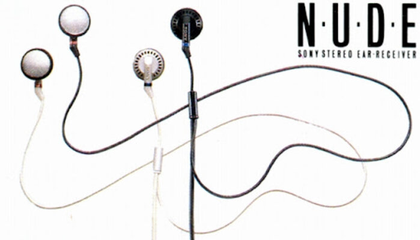
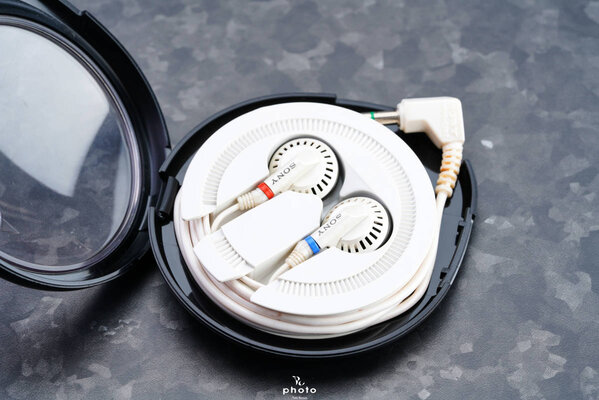
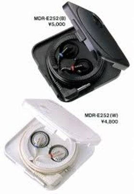

MDR-E252
$300.00
The MDR-E252 in-ears were part of Sony's "NUDE" series — which stood for "Natural Unequalled Dynamic Earbuds. These early in-ear headphones came in black or white, and they included a carrying case for tangle-free travel.


